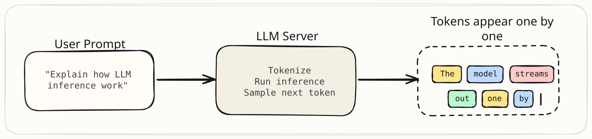
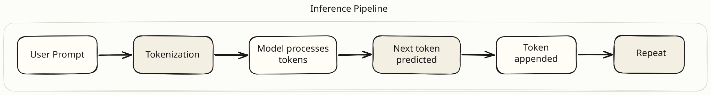
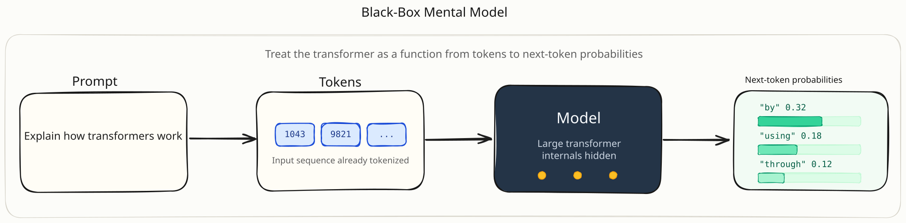
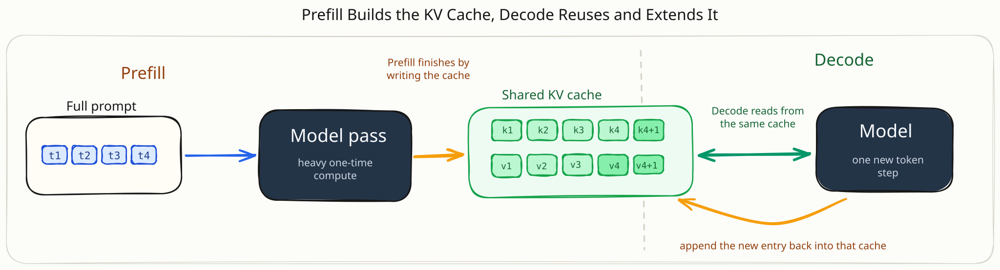
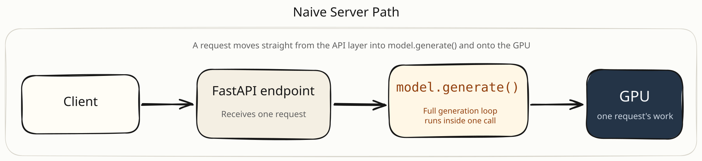
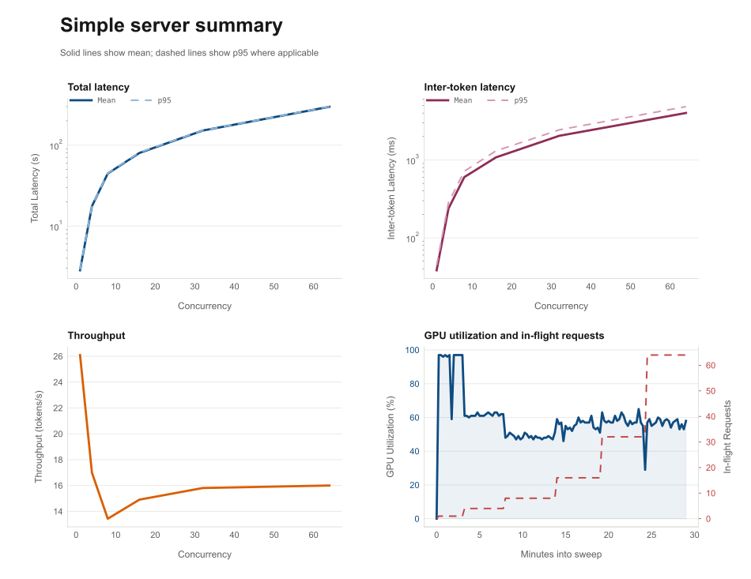
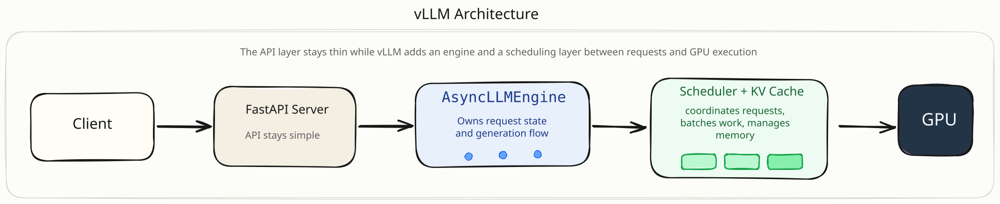
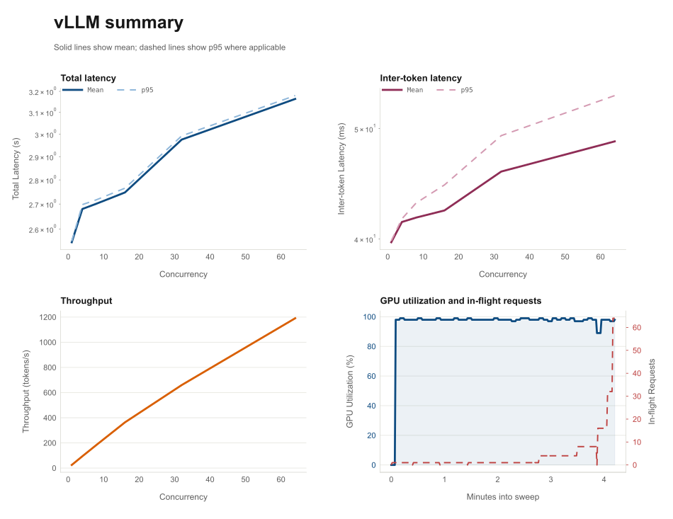

Understanding LLM Inference by Building a Server From Scratch
Introduction
Over the past few years, large language models have become a new kind of infrastructure. Most developers interact with them through APIs that look something like this:
You send a prompt, and a few seconds later the model returns a response.
From the outside, this interaction feels similar to calling any other web service. The request goes in, the answer comes back, and the complexity is hidden behind the API.

But once I started looking more closely at what happens inside the server that produces those responses, I realized that generating text with a large language model is very different from most other backend workloads.
Unlike a typical web request that can be processed in one step, language models generate text one token at a time. Each new token depends on the tokens that came before it. That means the model is constantly maintaining context while gradually extending the response.
At the same time, the server is not handling just one request. In a real system, many users are sending prompts at different times, each asking the model to generate responses of different lengths.
Suddenly the problem becomes more interesting. The server needs to:
- keep track of partially generated responses
- share GPU resources between many requests
- avoid recomputing work it has already done
- produce tokens quickly enough that the user does not feel the system is slow
What initially looks like a simple request-response interaction turns into a surprisingly complex system. To explore this, I decided to host a model myself and trace the full lifecycle of a request, from the moment a prompt reaches the server to the moment the generated tokens are streamed back to the user.
For this investigation I chose Qwen-14B, a model that sits in a useful middle ground. It is large enough that efficiency matters, but still manageable to run on a single GPU with the right setup.
What Actually Happens When a Prompt Reaches an LLM?
To understand how LLM inference systems work, it helps to start with a simple mental model of what happens when a prompt reaches the model.
At a high level, the pipeline looks like this:

To see why this matters for inference systems, let’s walk through each stage.
Converting Text into Tokens
Language models do not process raw text directly. Instead, they operate on tokens, which are numerical representations of pieces of text.
When a prompt reaches the server, the first step is to convert the text into tokens.
For example, the prompt:
might be converted into something like:
Prompt after tokenization
Each number represents a token in the model’s vocabulary. Depending on the tokenizer, a single token might correspond to a whole word, a subword fragment, or a punctuation mark.
This tokenization step converts the prompt into the format the neural network expects.
Once the prompt has been converted into tokens, it can be passed into the model.
Treating the Model as a Black Box
Modern language models like Qwen-14B are based on the transformer architecture. Internally, these models contain many layers of neural network computations that build contextual representations of tokens.
Entire books and courses are dedicated to explaining how transformers work. In this article, however, our goal is different.
This blog focuses on how LLMs are served efficiently, not on the details of how they are trained or how every attention computation works internally. For that reason, we will treat the transformer model as a black box.
From the perspective of an inference system, the model behaves like a function that takes a sequence of tokens and predicts the next token.
Conceptually:

The model reads the tokens in the prompt, performs a large amount of computation internally, and outputs a probability distribution over the next possible token.
The token with the highest probability is typically chosen as the next token in the generated response.
By treating the model this way, we can focus on the system behavior around the model: how requests are processed, how memory grows, and how computation is scheduled. These are the core challenges of building efficient LLM inference systems.
But generation does not stop after producing one token.
Generation Is a Loop
Language models generate text one token at a time.
After the first token is predicted, it is appended to the sequence of tokens, and the model is called again to predict the next token.
Starting from our earlier prompt, the model might produce a sequence like this:
Sequence grows one token at a time
Each new token becomes part of the input for the next step.
This loop continues until the model decides the response is complete.
This is also why responses from systems like ChatGPT often appear gradually, with tokens streaming back one by one.
At first glance, this loop seems simple enough, but notice that the model is being called with a longer sequence every step.
The Hidden Cost of Repeated Computation
Every time the model generates a token, we call the model again with a longer sequence of tokens.
Consider what happens if the model processes the entire sequence from scratch every time.
Naive repeated recomputation
Notice what is happening here.
Every step requires the model to process all previous tokens again, even though most of that computation has already been done in earlier steps.
As the sequence grows longer, the amount of repeated work grows as well.
This means the model would be redoing large portions of the same computation over and over again. For a model with billions of parameters, that would make inference extremely inefficient. Naturally, inference systems try to avoid this repeated work.
Remembering Previous Computation (The KV Cache)
In the previous section we saw that a naive implementation would repeatedly process the entire sequence every time a new token is generated.
To avoid this repeated work, modern inference systems store intermediate results from earlier computations so they can be reused later.
To understand what is being stored, it helps to briefly recall what happens inside the model.
When the transformer processes tokens, each layer builds internal representations that capture how tokens relate to one another. Part of this process involves computing structures known as keys and values for every token.
You do not need to understand the full mathematics behind these vectors to understand the system behavior. The important idea is simpler:
When the model processes a token, it produces information that future tokens will need in order to understand the sequence.
Instead of recomputing this information every time a new token is generated, inference systems store it in memory.
This stored information is called the KV cache.
In fact, inference naturally splits into two distinct phases based on this caching behavior.
When a request arrives, the model must first process the entire prompt to build the initial KV cache. This is called the prefill phase. If the prompt has 500 tokens, prefill means running all 500 through the model to establish context. This is a heavy, one-time computation.
Once prefill is complete, the model switches to the decode phase, generating new tokens one at a time, reusing the KV cache from earlier steps. Each decode step is much lighter than prefill, but it happens many times.
Conceptually, the process looks like this.

This turns generation into a much cheaper operation. Instead of repeatedly processing the entire sequence, the model only needs to compute the representations for the new token and append them to the cache. Each decode step adds one more entry to the KV cache, so the cache grows incrementally as the response gets longer, but the work per step stays small because only the new token needs to be processed.
The Tradeoff: Memory
The KV cache makes generation efficient, but it must live in GPU memory, and it grows with every token. A request with a long prompt and a long generated response will accumulate a large cache. Now imagine a server handling many requests at the same time, each with a different prompt length, a different number of generated tokens, and its own KV cache occupying GPU memory.
This means the inference system must constantly manage growing memory usage while continuing to generate tokens for multiple requests simultaneously.
At this point, hosting an LLM begins to look less like a simple web service and more like a resource management problem. The server must carefully balance compute on the GPU, memory consumed by KV caches, and multiple requests generating tokens at different speeds.
These constraints are what make LLM inference systems fundamentally different from traditional backend workloads.
Building a Naive LLM Server
Now that we have a mental model for how generation works (tokenize, predict, append, repeat), the next step is to see what happens when we actually try to serve a model.
The simplest approach is to load the model into GPU memory, expose an HTTP endpoint, and call the model whenever a request arrives.
Let’s try exactly that.
Setup
For these experiments we use Qwen2.5-14B-Instruct, a 14-billion-parameter instruction-tuned model. It is large enough that efficiency matters, but still fits on a single GPU with the right instance. We run it on an AWS g6e.xlarge, which provides an NVIDIA L40S with 48 GB of VRAM, enough headroom for the model weights in FP16 plus the KV caches that grow during generation.
The server itself is deliberately simple. A FastAPI application loads the model into GPU memory at startup using the Hugging Face Transformers library. When a request arrives, the server tokenizes the prompt, calls model.generate(), and streams the resulting tokens back to the client over an SSE connection. There is no batching, no scheduler, and no memory management beyond what PyTorch provides by default.
from fastapi import FastAPI
from transformers import AutoModelForCausalLM, AutoTokenizer
import torch
app = FastAPI()
tokenizer = AutoTokenizer.from_pretrained("Qwen/Qwen2.5-14B-Instruct")
model = AutoModelForCausalLM.from_pretrained(
"Qwen/Qwen2.5-14B-Instruct",
torch_dtype=torch.float16,
device_map="auto"
)
@app.post("/generate")
def generate(prompt: str):
inputs = tokenizer(prompt, return_tensors="pt").to("cuda")
outputs = model.generate(
**inputs,
max_new_tokens=200
)
return tokenizer.decode(outputs[0])The actual implementation adds streaming support, async handling, and configurable parameters, but the inference path is the same.
Architecturally, the entire path looks like this:

Each request gets its own call to model.generate(), which runs the full generation loop on the GPU and streams tokens back through SSE. It is about as direct as an inference server can get.
Alongside the server, we set up a lightweight observability stack to capture what happens during benchmarks. The server instruments every request with Prometheus metrics: time to first token, end-to-end latency, inter-token latency, and in-flight request count. A separate GPU exporter polls nvidia-smi and publishes GPU utilization, memory usage, and power draw as Prometheus gauges, scraped at one-second intervals. On the client side, a load generator sends concurrent streaming requests and records per-request timing directly from the SSE stream. Between server-side metrics, GPU telemetry, and client-side measurements, we can reconstruct a detailed picture of how the system behaves at each concurrency level.
Testing the Server
To understand how this server behaves under load, we ran a concurrency sweep. Every request used the same prompt and generated approximately 75 tokens. We sent 64 requests at each concurrency level (1, 4, 8, 16, 32, and 64) and recorded latency, inter-token latency, throughput, and GPU utilization throughout.

The four panels tell the full story.
Total latency rises almost linearly with concurrency. At concurrency 1, a request completes in about 2.8 seconds. By concurrency 8 it takes roughly 45 seconds. At concurrency 64, the same request takes nearly five minutes. The model did not change, the hardware did not change. The only variable was how many requests were in flight at the same time.
Inter-token latency follows the same curve. At concurrency 1, tokens arrive every ~38 milliseconds, fast enough to feel interactive. At concurrency 8, the gap widens to ~600 milliseconds per token. By concurrency 64 it reaches about 4 seconds between tokens. This is what a user actually experiences: a stream that starts out smooth and gradually stalls as the server takes on more work.
Throughput is the most revealing panel. At concurrency 1, the server generates about 26 tokens per second. You might expect throughput to climb as we add concurrency, since more requests should mean more useful work. Instead, throughput actually drops to around 13–16 tokens per second and then flattens completely. The server accumulates more in-flight requests without producing proportionally more tokens. The extra concurrency is absorbed almost entirely as wait time.
GPU utilization explains why. Averaged across the full sweep, GPU utilization sits around 59%. It spikes to 97% during bursts of active generation, but drops during the gaps between sequential generation calls. The server is not keeping the GPU consistently busy. Even though requests are piling up, the scheduling model (one model.generate() call at a time) leaves the hardware underutilized between requests.
Why This Approach Breaks Down
The benchmark results make the limitations clear. A server that simply calls model.generate() inside an HTTP endpoint runs into several compounding problems:
- GPU utilization that fluctuates instead of scaling with load, because requests are processed largely one at a time
- Latency that grows roughly in proportion to concurrency, since each additional in-flight request pushes every other request further back in the queue
- Throughput that flattens immediately — more concurrent requests do not produce more tokens per second
- GPU memory pressure that increases with each concurrent request, since every active request carries its own KV cache and the server has no mechanism to manage that memory efficiently
The core problem is a scheduling mismatch. The server accumulates in-flight work, but it cannot translate that work into sustained GPU utilization. Extra concurrency mostly makes users wait longer, not the server work harder.
Serving a large language model efficiently turns out to be a systems problem. The server needs to schedule work from multiple requests onto the GPU efficiently, keep the GPU busy rather than processing requests one at a time, and manage KV cache memory carefully as requests enter and leave the system.
This is exactly the class of problems that specialized inference engines like vLLM are designed to solve. In the next section, we will replace our naive server with vLLM and examine how its architecture addresses these challenges.
Hosting the Model with vLLM
The naive server’s core limitation was not FastAPI, the model, or the hardware. It was the absence of any coordination between requests. Each call to model.generate() ran its own generation loop, and the server had no way to share GPU work across users. To fix that, we replace the inference backend with vLLM, an engine designed specifically for serving large language models.
Replacing the Backend
The change is surgical. The FastAPI API layer stays the same. The only difference is what happens after a request arrives.
With vLLM, inference is delegated to an engine that sits between the API layer and the GPU:

In code, the key change is replacing model.generate() with vLLM’s async engine:
from vllm import AsyncEngineArgs, AsyncLLMEngine, SamplingParams
engine = AsyncLLMEngine.from_engine_args(
AsyncEngineArgs(
model="Qwen/Qwen2.5-14B-Instruct",
dtype="float16",
gpu_memory_utilization=0.9,
)
)
# Inside the request handler:
async for output in engine.generate(prompt, sampling_params, request_id):
yield outputFrom the outside, the service still behaves like a normal API. A client sends a prompt and receives streamed tokens. But internally, vLLM now controls how requests are executed, how GPU work is scheduled, and how memory is managed. The three key mechanisms it uses are a scheduler that coordinates active requests, continuous batching that keeps the GPU busy, and paged attention that manages KV cache memory efficiently.
To understand why these matter, we need to look at what vLLM sees that the naive server was blind to.
How vLLM Manages Inference
Each of the concepts below (scheduling, continuous batching, paged attention) could be its own deep dive. There are excellent papers and posts dedicated to each one. Our goal here is different. We want just enough understanding of each idea to see why vLLM behaves so differently from the naive server we built earlier, and to make sense of the benchmark results in the next section.
Earlier we saw that inference naturally splits into two phases: a heavy prefill step that processes the prompt and builds the KV cache, and a lightweight decode loop that generates tokens one at a time. The naive server treated both phases identically. It called model.generate() and let the library handle everything. vLLM’s engine explicitly separates them because they place very different demands on the GPU. Some requests might be in prefill while others are already decoding, and the engine needs to know the difference in order to schedule work intelligently.
That is where the scheduler comes in. Once multiple requests are active, the engine has to constantly decide what the GPU should work on next. Some requests are still in prefill. Others are mid-decode. Some have short prompts, others long ones. The scheduler tracks all active requests, knows which phase each one is in, and groups work into batches that keep the GPU busy.
This is the key shift from the naive server. Requests no longer operate independently. They become units of work that the scheduler coordinates across the whole system.
The scheduler’s main technique is continuous batching. In the naive server, concurrent requests behaved roughly like this:
Naive concurrency behavior
The GPU could handle more work, but the system had no way to combine generation steps across requests. vLLM changes this by dynamically grouping token-generation work from multiple active requests into shared GPU executions:
Continuous batching over time
Requests can enter the batch while others are already running. Shorter requests leave as soon as they finish. The batch changes over time instead of being fixed upfront, which is why it is called continuous batching. This is especially well suited to LLM serving, because decode already happens one token at a time. The scheduler exploits that structure to keep the GPU busy across many users at once.
Continuous batching solves the compute scheduling problem, but memory is the other major constraint. Each active request carries its own KV cache, and as more tokens are processed, that cache grows. With many concurrent requests, memory pressure becomes serious.
A traditional implementation treats the KV cache as large contiguous allocations, one block per request. That wastes memory and leads to fragmentation, especially when requests have different lengths and finish at different times.
vLLM addresses this with paged attention. Instead of allocating one large continuous block per request, the KV cache is split into smaller pages that can be assigned and reused flexibly:
Paged KV cache
Paged attention does for KV cache memory what virtual memory does for general-purpose systems: it makes allocation flexible and reduces waste. Pages from completed requests can be immediately recycled to new ones, so memory utilization stays high even as requests enter and leave the system continuously.
Testing the vLLM Server
We ran the same concurrency sweep as before: same model, same instance, same prompt, same concurrency levels (1, 4, 8, 16, 32, 64), 64 requests per level. The only change was the inference backend.

The contrast with the naive server is immediate.
Total latency barely moves. At concurrency 1, a request completes in about 2.5 seconds, roughly the same as the naive server. But at concurrency 8, latency is still only ~2.7 seconds, compared to ~45 seconds on the naive server. Even at concurrency 64, the average request finishes in about 3.2 seconds. The naive server took nearly five minutes at the same load. vLLM absorbs concurrency almost invisibly from the user’s perspective.
Inter-token latency tells the same story. At concurrency 1, tokens arrive every ~40 milliseconds, identical to the naive server. At concurrency 64, inter-token latency only increases to ~49 milliseconds. On the naive server at the same load, tokens arrived 4 seconds apart. Streaming stays smooth and interactive across the entire concurrency range.
Throughput is where the difference is most dramatic. The naive server peaked at ~26 tokens per second and then dropped as concurrency increased. vLLM scales in the opposite direction: ~25 tokens/s at concurrency 1, ~185 tokens/s at concurrency 8, ~363 tokens/s at concurrency 16, and nearly 1,200 tokens/s at concurrency 64. The same GPU that could not keep up with 4 users on the naive server is now serving 64 users simultaneously with sub-50ms inter-token latency.
GPU utilization confirms that the hardware is finally being used efficiently. Averaged across the full sweep, utilization sits at ~96% with a peak of 99%. Compare that to the naive server’s ~59% average. The scheduler and continuous batching keep the GPU saturated instead of leaving it idle between sequential generation calls.
Conclusion
Serving a large language model efficiently is primarily a systems problem.
The model did not change between our two servers. The hardware did not change. But the naive server took nearly five minutes to complete a request at concurrency 64, while vLLM finished the same request in about 3 seconds, and generated tokens 45 times faster overall. The difference was entirely in how work was scheduled and how memory was managed.
The techniques behind that improvement (continuous batching, paged attention, request-level scheduling) are not new ideas in systems engineering. They are adaptations of scheduling and memory management patterns that have existed in operating systems and databases for decades, applied to the specific constraints of autoregressive generation on GPUs.
In this article, we focused on a single-node setup to build intuition for these core ideas. But real-world deployments introduce additional challenges: handling traffic spikes, scaling across multiple GPUs, managing replicas, and monitoring system health.